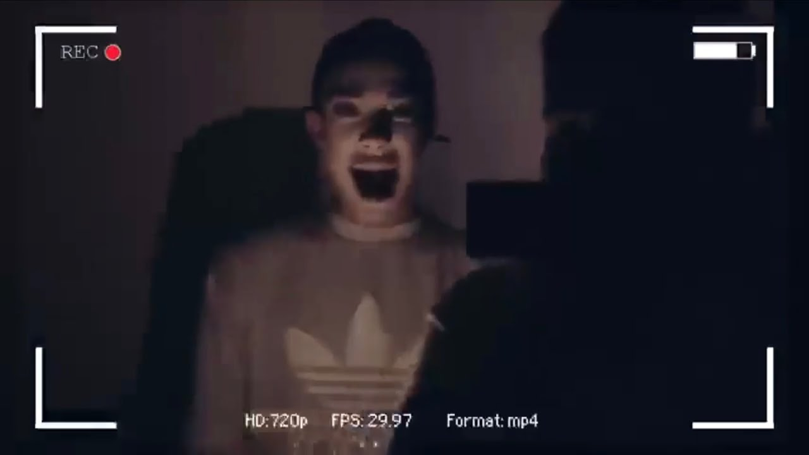

About Flashback Mary


Flashback Mary (Sister James) is a figure that replaced Bloody Mary in the game Bloody Mary.
If you stand in the mirror and say "Flashback Mary" three times, Sister James will appear as Flashback Mary.
While he is there, he will scream "Hi Shistersss" as high pitched as he can.
Flashback Mary is Sister James real form. When Sister James isn't in his true formed he is
disguised as a orange beauty guru, who likes to talk about the death of the beauty community even though